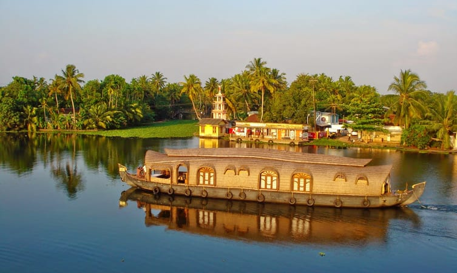

Kerala Backwaters
Alleppey Backwaters

Ashtamudi Backwaters
Cherai island Backwaters
Kavvayi Backwaters
Kumarakom Backwaters
Kuttanad Backwaters 
Explore one of the most striking Kerala backwaters, which is in Alleppey. A locale both for tourists and travelers. The best way to go around and explore is either a modest houseboat or a budget-friendly local ferry. Wave to the local children in vivid uniforms and the passing coconut trees. The picturesque offered by this locale is unbeatable amongst the many backwater tours in Kerala.
Highlights: Witness the serene sunset, capture the vivid birds flying above. If lucky enough to be here in August, watch the famous boat race.
Best time to visit: If you are looking for mild weather then months from November to February are favorable, but if you wish to explore the waters in summers then months from March to May are well-suited.
Nearest railway station: Alleppey railway station.
Nearest airport: Cochin International Airport.
Ashtamudi Lake derives its name from eight merging channels. This locale is one of the famous backwaters of Kerala and the houseboat tours here are extremely worthy to hop in. Cruises here give you a knock at the heart and rejuvenate the tired spirit. Let the local men take you on a special voyage to rediscover yourself. The exotic biodiversity shall enchant you forever.
Highlights: Get the essence of backwaters tours of Kerala through the local tribe and learn the tales of the big eight.
Best time to visit: September & October.
Nearest railway station: Kollam railway station.
Nearest airport: Trivandrum International Airport.
Of all the Kerala backwaters, this is a perfect blend of the sea and the backwaters. This enchanting locale is one amidst the must-see spots for tourists. it's a perfect destination for relaxation with the beachfront and picturesque view. It's a perfect destination for relaxation with the beachfront and picturesque view. All along you shall witness the Chinese fishing nets and green grooves.
Highlights: This locale hosts a lot of resorts where you can stay and have leisure time with your family, of course, this diversity also offers you a houseboat tour.
Best time to visit: All around the year.
Nearest railway station: Ernakulam railway station.
Nearest airport: Cochin International Airport.
Blessed with rare flora and fauna, it is considered among the most exotic locations in North Kerala. Originating as a result of five rivers gushing and forming the blissful waters offer a perfect landscape for you to go cruising on the same. Dare to miss this awesome backwater tour in Kerala.
Highlights: Catch a boat and go explore the unexplored culture and delicious seafood. The calm breeze and soothing aura are sure to bring peace to your soul.
Best time to visit: May to July.
Nearest railway station: Payyanur railway station.
Nearest airport: Calicut International Airport.
For a perfect backwater tour in Kerala, enjoy the scenic sites of lush paddy fields and coconut trees swaying, exotic village life right by your side while you sail through a network of canals that mix into the large patch of water in the Vembanad Lake.
Highlights: This region comes alive with various cultural performances and traditional competitions like Snake Boat racing. The locals get engaged in the preparation to welcome and feast, involve and spread prosperity and joy amongst the people here.
Best time to visit: August and September.
Nearest railway station: Alleppey railway station.
Nearest airport: Cochin International Airport.
Watch the duck fleet quacking together moving across the backwaters in perfect harmony. Like a patty in a burger, this locale is in between the hills and the sea. The tourists frequent this place, for their passion to witness the shimmering backwaters, that comprises of rivers, canals, and lakes on either side with the lush greenery and rural Kerala lifestyle, that remains completely unrevealed. Indeed one of the best backwater tour in Kerala.
Highlights: Watch the duck fleet quacking together moving across the backwaters in perfect harmony. Like a patty in a burger, this locale is in between the hills and the sea. The tourists frequent this place, for their passion to witness the shimmering backwaters, that comprises of rivers, canals, and lakes on either side with the lush greenery and rural Kerala lifestyle, that remains completely unrevealed. Indeed one of the best backwater tour in Kerala.
Best time to visit: August to March.
Nearest railway station: Alleppey railway station.
Nearest airport: Cochin International airport.